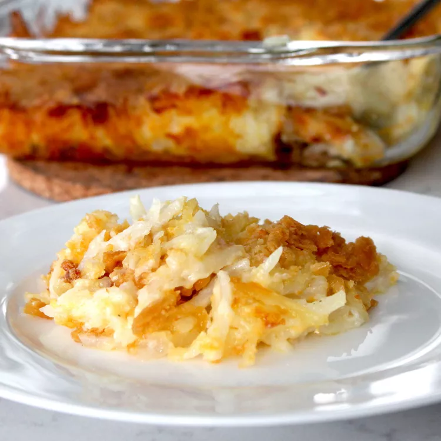

odin-recipes
Grandma's Green Bean Casserole

This green bean casserole without mushroom soup is much better than versions made with condensed soup. Instead of traditional French-fried onions, this from-scratch casserole is loaded with lots of melty Cheddar and a buttery cracker crumb topping. A homemade sour cream-based sauce adds just the right amount of tang to every bite. Try it for Thanksgiving!
Grandma's Green Bean Casserole Ingredients
- Butter: You'll use two tablespoons of butter for the green beans and two tablespoons for the topping.
- Flour:All-purpose flour thickens the green bean mixture, resulting in a decadent casserole.
- Sour cream: A cup of sour cream adds richness and pleasant tanginess.
- Onion:Diced white onion lends complexity, taking the flavor up a notch.
- Seasonings:A teaspoon of salt enhances the other flavors, while a teaspoon of sugar lends a touch of subtle sweetness.
- Green beansThis recipe calls for three cans of French-style green beans. You can use fresh green beans if you prefer.
- Cheese:You can use pre-shredded Cheddar cheese, but freshly grated is always best.
- Cracker crumbs:Buttery cracker crumbs give the topping a welcome crunch
How to Make Grandma's Green Bean Casserole
Here's a brief overview of what you can expect when make this old-fashioned green bean casserrole:
- Make the casserole: Melt butter in a large skillet, then add flour and cook for about a minute. Stir in sour cream, onion, salt, and sugar. Add green beans and toss to coat.
- Top the casserole: Transfer the mixture to a casserole dish. Spread the cheese over the green bean mixture. Mix the melted butter and crumbs, then sprinkle evenly over the cheese.
- Bake the casserole: Bake in the preheated oven until the topping is golden and bubbly.